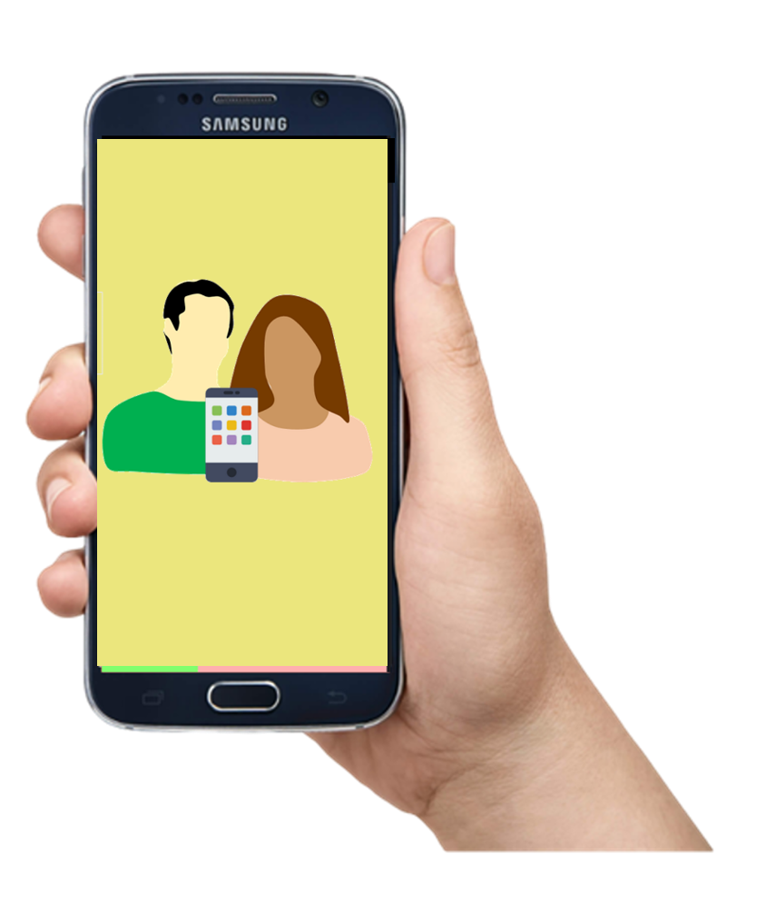

La idea comenzó hace poco más de medio año; todo comenzó un día, a finales de tercer semestre de Bachillerato, comentábamos, cómo es que las redes sociales, el internet y el mundo en general han influido en nuestra vida, en nuestras decisiones, memorias y hasta nuestros recuerdos.
Las redes sociales, aunque son herramientas esenciales hoy en día, no tienen algo que consideramos (y no sólo nosotros, sino, también todas las personas) muy importante, conocerse a uno mismo.
Todo el entorno de redes sociales, internet, aplicaciones, programas de tv, etcétera; giran en torno a relacionarte con las demás personas; mas sin embargo, ¿Cómo me relaciono conmigo mismo? ¿Cómo sé cuándo me siento bien? ¿Cómo saber quién quiero ser?
Por lo que nosotros, unos jóvenes cualesquiera, hemos decidido comenzar con nuestra propia aplicación, que además de ayudarte a describirte a ti mismo, te ayudará a relacionarte de forma interpersonal e intrapersonal incluyendo también, la relación con el entorno físico (ambiente).
Nuestra aplicación implementará un menú interactivo en el cual al registro, podrás registrarte como un docente o como un estudiante. Para en el caso de docente, se te presentará una serie de videos con contenido orientado a ayudar a los jóvenes estudiantes a identificarse a sí mismos. Además, de actividades, lecturas y ejercicios prácticos. También, podrás organizar tus clases con un código o un nombre de clase (esto con el fin de tener un mejor orden y manejo de los grupos/alumnos asignados.
En el caso de elegir por la opción de estudiante, se te presentará un menú interactivo con lecciones en los cuales tendrás ejercicios prácticos (como juegos, actividades al aire libre, entre otras), que te ayudarán más a relacionarte contigo mismo. También, como el docente, podrás ingresar el código (proporcionado por tu maestro) de la clase a la cual quieras ingresar.
Ahora te preguntarás, ¿Y esto qué tiene que ver con el medio ambiente? Además de todas la funciones anteriormente citadas, nuestra aplicación tendrá actividades que tengan que ver con el cuidado ambiental, para así, reducir nuestra huella ecológica, es decir, el reducir el impacto que tienen nuestras acciones en el mundo.
Todo esto con el fin de obtener resultados positivos no sólo en las personas, sino también en el planeta.
